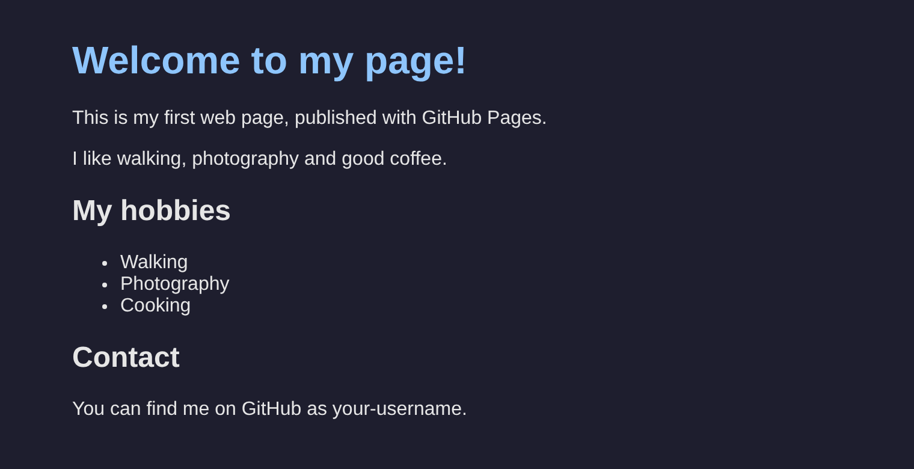

问题在哪里
你可能见过这样的文件夹，说不定自己也弄过一个：
左：常见的保存版本的办法，每改一次就复制出一份新文件，直到谁也说不清哪个是最新的，也不知道它们之间改了什么。右：只有一个文件夹，外加一份由快照（snapshot）组成的历史，记录着改了什么、什么时候改的、谁改的，以及为什么改。
像 报告-最终版-2-真的最终版.docx 这样的副本，回答不了你以后会遇到的任何一个问题：
- 哪个版本是最新的？
- 两个版本之间到底改了什么？为什么改？
- 上周二删掉的那一段，怎么找回来？
- 同事也改了同一个文件。我们怎么把各自的修改合到一起？
Git 能回答所有这些问题。
Git 能做什么
Git 是一个替你照看文件夹的程序。你随时都可以让 Git 给文件夹里的文件拍一张快照，并附上一句简短的说明，写明你做了什么，比如“添加联系页面”、“修正标题的拼写”。你保存的每一张快照，Git 都会留着，所以你随时都能回到其中任何一张。
有了这些快照，你就可以：
- 查看项目的完整历史：改了什么、什么时候改的、谁改的，以及为什么改；
- 逐行比较任意两个版本；
- 把一个文件或整个项目恢复到之前的任意一个版本；
- 在一旁尝试新想法，留下还是丢掉都可以，完全不会碰到你正在用的版本；
- 把你的工作和别人的工作合到一起。
想想电子游戏里的存档点。打难关之前先存个档；要是失败了，就回到存档点再来一次。Git 为你的工作提供存档点，想存多少个都可以，每个存档点都附有一条说明，写着你做了什么。
Git 在你自己的电脑上运行，不联网也能用。它可以管理任何类型的文件，但最擅长的是文本：网页、程序代码、笔记、数据、LaTeX 论文。Word 文件、图片和 PDF 也能保存，只是 Git 没办法告诉你它们内部改了什么。世界上大多数软件都是用 Git 保存的。
GitHub 增加了什么
GitHub 是一个网站（github.com），它在互联网上保存你的 Git 项目的一份副本。这样你就有了：
- 备份：就算笔记本电脑坏了，你的工作和它的历史也安然无恙；
- 在几台电脑上做同一份工作，而且各台电脑之间保持同步；
- 与他人协作：别人可以查看你的项目、提出修改建议，而你可以在采纳这些修改之前先审查（review）一遍；
- 借助 GitHub Pages，为你的项目提供一个免费的网站。
Git 在你的电脑上运行，并把项目的历史保存在你的电脑里。GitHub 在互联网上保存一份副本。你把新的快照发送到 GitHub，也从 GitHub 取回别人的快照。
Git 是工具；GitHub 是围绕它搭建的网站。不用 GitHub 也可以用 Git。像 GitHub 这样的网站有好几个（GitLab 和 Bitbucket 也是）。你在这里学到的 Git 在它们上面都能用，只是各家网站的样子不同。
你会遇到的词
现在不用记住它们。每个词在你第一次用到时都会再解释一遍。
| 词 | 通俗地说 | 课 |
|---|---|---|
| 仓库（repository，也叫 repo） | 由 Git 保存历史的项目文件夹 | 第 3 课 |
| 提交（commit） | 项目的一张快照，附带一条说明 | 第 3 课 |
| 分支（branch） | 一条独立的工作线，用来尝试新东西，又不会打扰主版本 | 第 5 课 |
| 合并（merge） | 把两个分支上的工作合到一起 | 第 5 课 |
| 远程仓库（remote） | 放在别处的一份仓库副本，通常在 GitHub 上 | 第 7 课 |
| 推送（push） | 把你的新提交发送到 GitHub | 第 7 课 |
| 拉取（pull） | 把 GitHub 上的新提交取回到你的电脑上 | 第 9 课 |
| 克隆（clone） | 把整个仓库从 GitHub 复制到你的电脑上 | 第 9 课 |
| 拉取请求（pull request） | 在 GitHub 上发起的合并某个分支的请求，合并之前可以先在那里审查 | 第 10 课 |
你将做出什么
在本系列中，你会一步一步做出一个小小的个人网页，并且从第一行开始就用 Git 保存它。一路上，你会修改它，在分支上尝试新想法，解决一次冲突，把它放到 GitHub 上，然后发布出去。最后，它会在你自己的网址 https://your-username.github.io/my-page/ 上线，样子是这样的：

到第 11 课时你将完成的网页，用 GitHub Pages 发布。你不需要懂任何网页知识：每一行都会提供给你。
你不需要是程序员。只要会打字、能照着说明做，你就能做到。
课程如何进行
每一课需要 15 到 45 分钟。请按顺序学习：每一课都从上一课结束的地方开始。
每条命令都要自己输入，输入的地方叫作终端（terminal）：一个通过打字向电脑下达指令的窗口。第 2 课会教你怎么打开它。命令会出现在像下面这样的深色框里，写在 $ 后面，下面紧接着是电脑的回答：
$ git statusOn branch main
nothing to commit, working tree clean$ 不是命令的一部分：只输入它后面的内容，然后按 Enter（Mac 上是 Return）。现在还没有什么要输入的：这个框只是一个示例。
把你得到的回答和这里显示的对照一下。本系列中的每一个回答都是实际运行命令得到的，所以你的回答应该和它一样，只有少数几样东西在每台电脑上都不同：叫作哈希值（hash）的一长串代码（比如 c50e3a0）、日期和时间、你的主文件夹的路径、版本号，以及数据大小和传输速度。其余的都应该一致。如果不一致，就找找这一步下方的如果出了问题框，或者查看问题排查页。
在 Windows、macOS 和 Linux 操作不同的地方，课程会为每个系统各准备一个标签页，并先打开你所用系统的那一个。你还会看到下面这些框：
在浏览器里、在 GitHub 网站上完成的步骤。
在 VS Code 中完成的步骤。VS Code 是你将在第 2 课安装的编辑器。
一个捷径，或者一个好习惯。
让很多人栽跟头的地方。
每一课的结尾都有一段小结、一张本课用到的命令表，以及一组简短的测验题。学完后点击页面底部的标记为已完成，课程列表就会显示你的进度（进度只保存在你的浏览器里，不会保存到别处）。
小结
- Git 在你自己的电脑上，把一个项目文件夹的历史保存为一系列快照，这些快照叫作提交。
- GitHub 是一个在网上保存副本的网站，让你可以备份、分享、与他人协作，还能发布你的项目。
- 你会一步一步做出一个小网页，并在第 8 课把它放到网上。
- 每条命令都自己输入，不要输入
$，并把你看到的结果和课程里的对照。